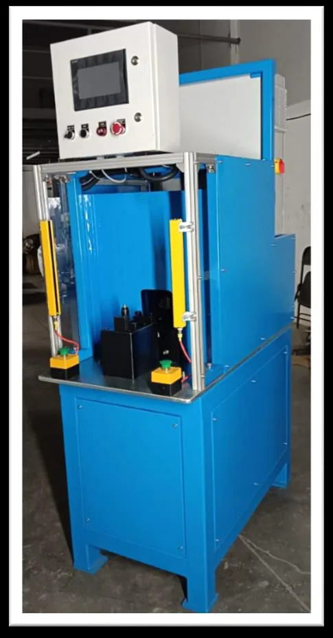
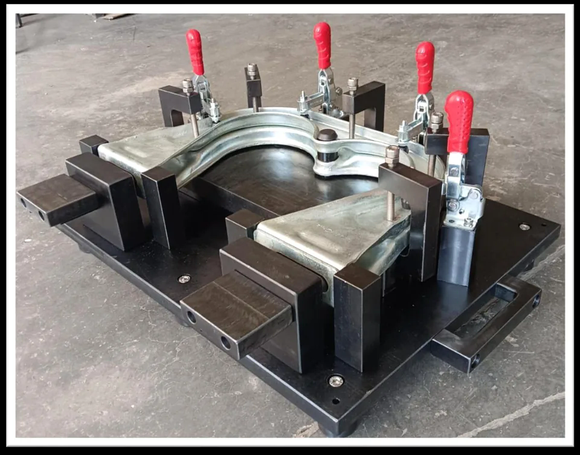
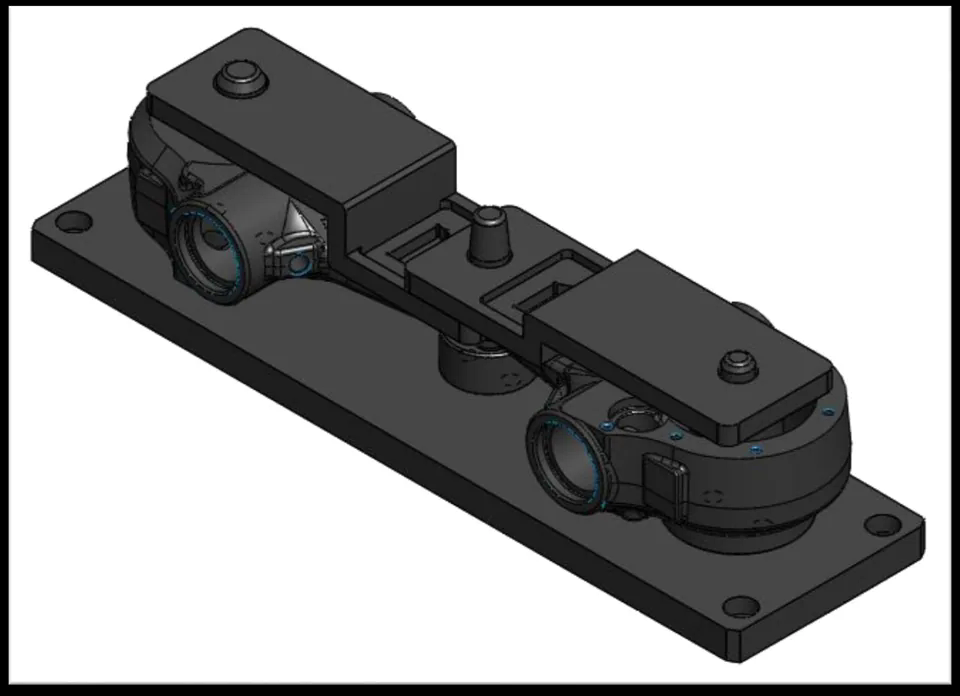
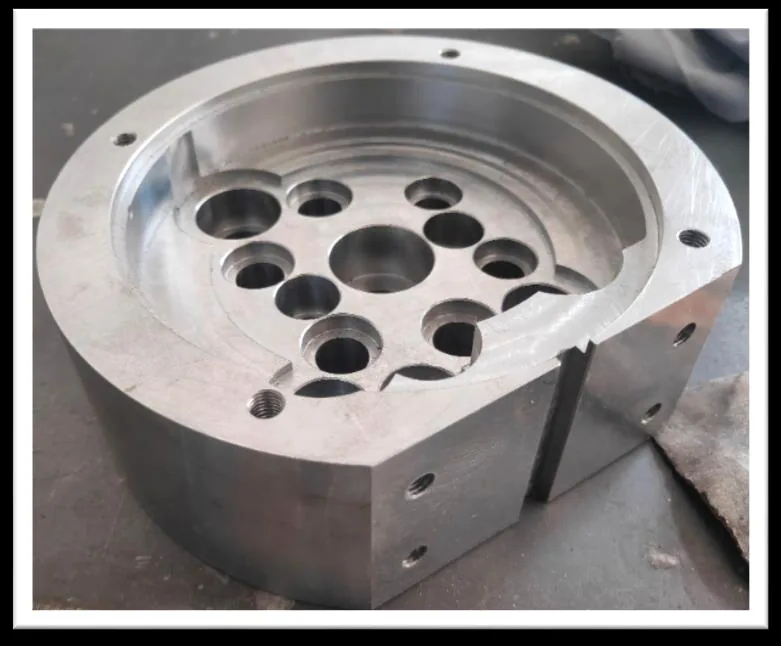

00 / Engineering requirement
You send
the requirement.
Drawings, CAD models or a component sample can establish the starting point for an enquiry.
Send your drawingUK / Manufacturing coordination
One UK-facing enquiry path for drawing-led machining, tooling and fabricated-component requirements. Manufacturing scope, inspection and documentation are defined for each quotation.
Capability, inspection scope and required records are confirmed with the quotation.
00—07 / Representative route
A component does not begin at the machine. It begins with a drawing, a material, a quantity and a clear definition of what must be accepted.
The route below is illustrative. Operations are selected to suit the part; not every component passes through every process.
Stage 00 of 07: Engineering requirement.

Drawings, CAD models or a component sample can establish the starting point for an enquiry.

Material grade, form and supporting-document requirements are considered against the drawing and application.
Stock is prepared to create a controlled starting condition for the selected manufacturing route.
Machining operations create the geometry, interfaces and drawing-defined features required by the component.

Turning, tooling, fabrication or other supporting operations are considered only where the requirement calls for them.

Specified characteristics are checked against the approved requirement before release, to the inspection scope agreed for the order.

Finished components are prepared for delivery in line with agreed project, packaging and documentation requirements.

Manufacturing route, location and delivery terms are defined for the quotation.
Capabilities / Route selection
Support for drawing-led component and tooling enquiries. Available processes, capacity and lead time are confirmed against the specific requirement.
Drawing and requirement review, with manufacturability questions raised before a route is agreed.

What we can assess
The useful question is not “which card fits?”. It is whether the drawing, material, volume and acceptance requirements point to a viable route.
Parts with milled geometry, interfaces, pockets, bores and drawing-defined features.
Shafts, sleeves and rotational parts where the available turning route is suitable.
Production aids, checking fixtures and workholding requirements developed around use.
Cut, formed or joined assemblies where the process and inspection route can be confirmed.
One-off and recurring requirements reviewed against quantity, capacity and programme needs.
Partner-supported engineering / Beyond the component
The supplied Fort Automation capability profile adds specialist engineering routes for CAD development, reverse engineering, special-purpose machines and production fixtures. These are assessed as distinct project scopes—not implied as part of every component order.




Where the requirement extends beyond a single manufactured part, the enquiry can be reviewed around function, interfaces, acceptance criteria and the responsibilities required to take it forward.
2D and 3D modelling, conceptual design, legacy 2D conversion, manufacturing drafting with GD&T and progressive-tool detailing are described in the supplied partner profile.
Bespoke production or checking equipment can be assessed against the required operation, interfaces, cycle expectations and safety responsibilities.
Dedicated checking fixtures, gauges and CMM part-holding fixtures can be scoped around the approved part definition and intended inspection method.
Workholding can be developed around the manufacturing or assembly operation, including application-specific and welding-fixture enquiries.
Sample-led reconstruction can be reviewed where ownership, design intent, acceptance basis and permitted use of the original component are clear.
Press tools, dies and metrology workstations are additional project types evidenced in the profile and remain subject to requirement-specific confirmation.
Source evidence Fort Automation profile supplied to Quantamorph, September 2026. Images show partner portfolio examples. Availability, design responsibility, standards, validation and delivery scope are confirmed for each RFQ.
Quality / Define before manufacture
The inspection route should be part of the commercial scope—not an assumption made after production.
Identify the approved requirement and the features that govern acceptance.
Clarify specified characteristics, standards and any project-specific conditions.
Agree checking level, equipment needs and any reporting requirement at quotation.
Supply inspection, material or delivery records where they form part of the agreed order.
No universal tolerance, inspection level or documentation package is implied. These are defined for each quotation.
Applications / Enquiries considered
Geometry is only part of the brief. End use, quantity, documentation and acceptance requirements shape the route. Relevant sector experience and compliance needs should be confirmed for the project.
Why Quantamorph / Commercial clarity
Quantamorph Limited provides the UK-facing commercial and technical interface. A manufacturing route may involve partner capability selected for the enquiry.
Manufacturing location, process capacity, inspection scope, documentation and delivery terms are made explicit in the quotation. The advantage is coordination without disguising where or how the component will be produced.
Drawing, quantity, material and acceptance needs enter through one enquiry.
Manufacturability questions and production communication are kept against the requirement.
Capability and records are confirmed for the order rather than implied by generic claims.
RFQ / What happens next
Share the drawing, sample or functional brief. Confidentiality and file-transfer needs can be agreed before sensitive information is exchanged.
Drawing revision, sample or functional brief, plus quantity and target date.
Geometry, acceptance needs, documentation and open questions.
Proposed route, commercial scope and stated assumptions.
Manufacture and technical communication against the agreed order.
Checks and records follow the quoted inspection scope.
Packaging, documentation and delivery as agreed.
Start an enquiry / sales@quantamorph.co.uk
Share your drawing, CAD file, sample details or functional requirement. Include the revision, material, quantity, target date and any inspection, validation or documentation needs that affect the quotation.
Send your drawing Prefer to agree confidentiality or file transfer first? Email the requirement summary without attachments.